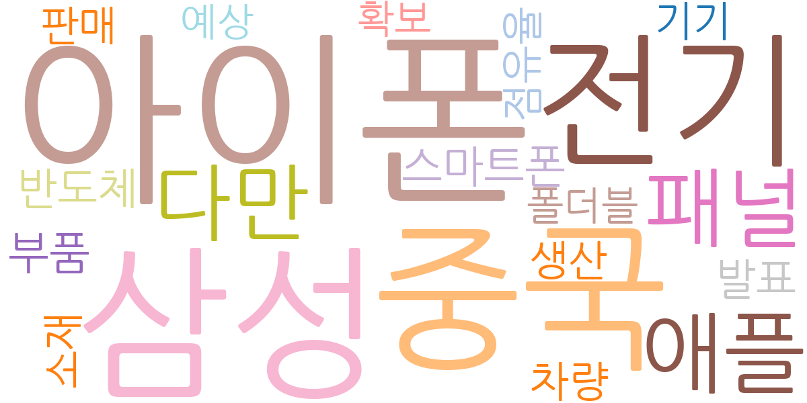
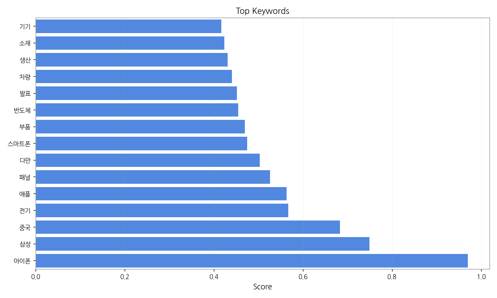
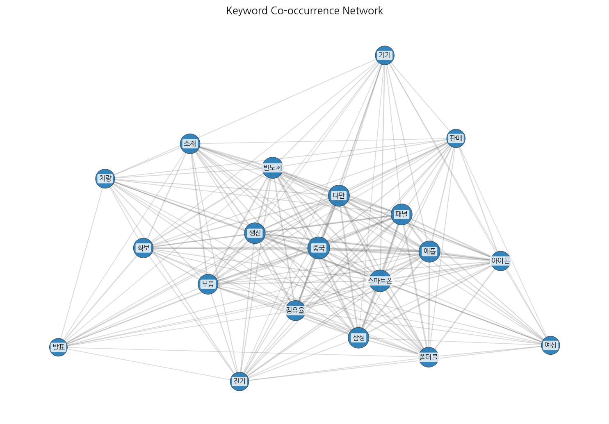
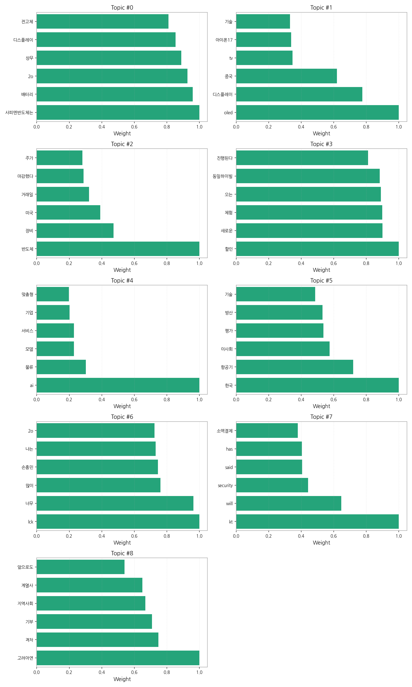
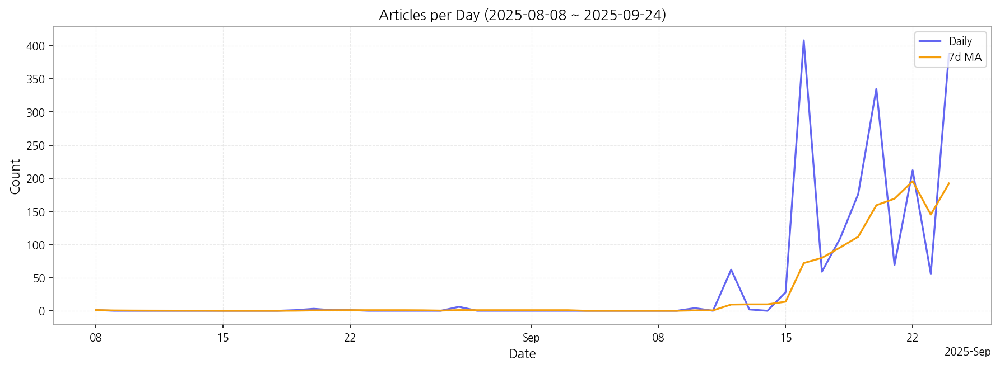

1. 핵심 맥락:
2. 최근 변화/스파이크:
3. 실무 인사이트:

| Rank | Keyword | Score |
|---|---|---|
| 1 | 아이폰 | 0.970 |
| 2 | 삼성 | 0.749 |
| 3 | 중국 | 0.683 |
| 4 | 전기 | 0.567 |
| 5 | 애플 | 0.563 |
| 6 | 패널 | 0.526 |
| 7 | 다만 | 0.503 |
| 8 | 스마트폰 | 0.474 |
| 9 | 부품 | 0.469 |
| 10 | 반도체 | 0.455 |
| 11 | 발표 | 0.452 |
| 12 | 차량 | 0.441 |
| 13 | 생산 | 0.431 |
| 14 | 소재 | 0.423 |
| 15 | 기기 | 0.417 |




1. 핵심 맥락:
2. 최근 변화/스파이크:
3. 실무 인사이트:
| Idea | Target | Value Prop | Score |
|---|---|---|---|
| 차량용 AR HUD 솔루션 with MicroLED & AI 객체 인식 | 글로벌 완성차 OEM (프리미엄 브랜드 중심) | MicroLED의 압도적인 시인성과 AI 기반 객체 인식 기술을 통해, AR HUD의 정보 제공 정확도 및 안전성을 극대화하여 경쟁사 대비 차별화된 운전 경험 제공. (야간/악천후 시인성 30% 향상, 시선 분산 15% 감소) | 4.20 |
| AI 기반 디스플레이 공정 자동화 및 수율 예측 솔루션 | 국내외 디스플레이 제조사 (LGD, 삼성디스플레이, BOE) | AI 기반의 실시간 공정 데이터 분석 및 예측을 통해 디스플레이 생산 수율을 획기적으로 향상시키고, 불량률 감소 및 생산 비용 절감. (수율 5% 향상, 불량률 10% 감소, 생산 비용 7% 절감) | 4.00 |
| XR용 초고해상도 마이크로디스플레이 솔루션 with Graphene 신소재 | 북미 빅테크 기업 (Meta, Apple, Microsoft) | Graphene 신소재 기반의 초고해상도, 저전력 마이크로디스플레이를 통해 XR 기기의 성능을 획기적으로 향상시키고, 경쟁사 대비 차별화된 몰입 경험 제공. (해상도 2배 향상, 발열 30% 감소, 무게 20% 감소) | 3.90 |
| 차량용 투명 디스플레이 솔루션 with 신소재 | 글로벌 완성차 OEM (전기차 스타트업 포함) | 차량 내부 디자인의 자유도를 높이고, 증강현실(AR) 기반의 정보 제공을 통해 운전자와 탑승자에게 새로운 경험을 제공. (투명도 80% 이상, 넓은 시야각, 다양한 디자인 적용 가능) | 3.70 |
| IT용 스트레처블 OLED 패널 솔루션 | 글로벌 IT 기기 제조사 (Samsung, LG전자, Lenovo) | 자유로운 형태 변환이 가능한 스트레처블 OLED 패널을 통해 IT 기기의 디자인 혁신 및 사용자 경험 확장. (최대 30%까지 화면 확장 가능, 다양한 폼팩터 디자인 지원) | 3.50 |